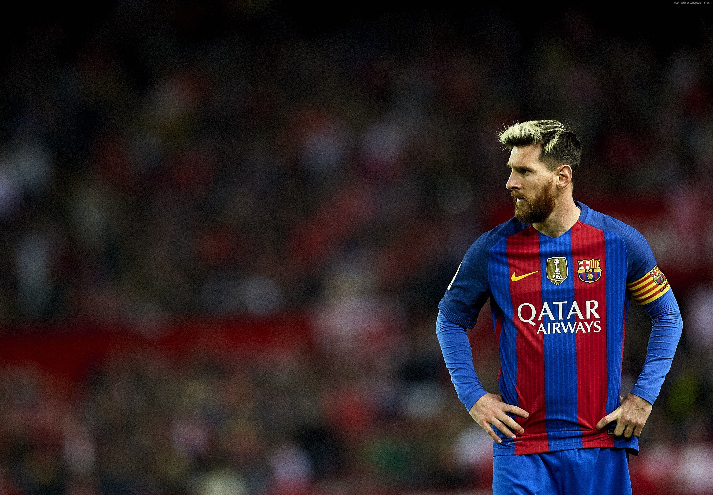

Lionel Andrés Messi is an Argentine professional footballer who plays as a forward for and captains both Major League Soccer club Inter Miami and the Argentina national team. He is widely regarded as one of the greatest players of all time and has won many individual and team honors, including six Ballon d'Or awards and four UEFA Champions League titles.
| Club | Season | League | National cup | Continental | Other | Total | ||||||
|---|---|---|---|---|---|---|---|---|---|---|---|---|
| Division | Apps | Goals | Apps | Goals | Apps | Goals | Apps | Goals | Apps | Goals | ||
| Barcelona C | 2003–04 | Tercera División | 10 | 5 | — | — | — | 10 | 5 | |||
| Barcelona B | 2003–04 | Segunda División B | 5 | 0 | — | — | — | 5 | 0 | |||
| 2004–05 | Segunda División B | 17 | 6 | — | — | — | 17 | 6 | ||||
| Total | 22 | 6 | — | — | — | 22 | 6 | |||||
| Barcelona | 2004–05 | La Liga | 7 | 1 | 1 | 0 | 1 | 0 | — | 9 | 1 | |
| 2005–06 | La Liga | 17 | 6 | 2 | 1 | 6 | 1 | 0 | 0 | 25 | 8 | |
| 2006–07 | La Liga | 26 | 14 | 2 | 2 | 5 | 1 | 3 | 0 | 36 | 17 | |
| 2007–08 | La Liga | 28 | 10 | 3 | 0 | 9 | 6 | — | 40 | 16 | ||
| 2008–09 | La Liga | 31 | 23 | 8 | 6 | 12 | 9 | — | 51 | 38 | ||
| 2009–10 | La Liga | 35 | 34 | 3 | 1 | 11 | 8 | 4 | 4 | 53 | 47 | |
| 2010–11 | La Liga | 33 | 31 | 7 | 7 | 13 | 12 | 2 | 3 | 55 | 53 | |
| 2011–12 | La Liga | 37 | 50 | 7 | 3 | 11 | 14 | 5 | 6 | 60 | 73 | |
| 2012–13 | La Liga | 32 | 46 | 5 | 4 | 11 | 8 | 2 | 2 | 50 | 60 | |
| 2013–14 | La Liga | 31 | 28 | 6 | 5 | 7 | 8 | 2 | 0 | 46 | 41 | |
| 2014–15 | La Liga | 38 | 43 | 6 | 5 | 13 | 10 | — | 57 | 58 | ||
| 2015–16 | La Liga | 33 | 26 | 5 | 5 | 7 | 6 | 4 | 4 | 49 | 41 | |
| 2016–17 | La Liga | 34 | 37 | 7 | 5 | 9 | 11 | 2 | 1 | 52 | 54 | |
| 2017–18 | La Liga | 36 | 34 | 6 | 4 | 10 | 6 | 2 | 1 | 54 | 45 | |
| 2018–19 | La Liga | 34 | 36 | 5 | 3 | 10 | 12 | 1 | 0 | 50 | 51 | |
| 2019–20 | La Liga | 33 | 25 | 2 | 2 | 8 | 3 | 1 | 1 | 44 | 31 | |
| 2020–21 | La Liga | 35 | 30 | 5 | 3 | 6 | 5 | 1 | 0 | 47 | 38 | |
| Total | 520 | 474 | 80 | 56 | 149 | 120 | 29 | 22 | 778 | |||
| Paris Saint-Germain | 2021–22 | Ligue 1 | 26 | 6 | 1 | 0 | 7 | 5 | — | 34 | 11 | |
| 2022–23 | Ligue 1 | 32 | 16 | 1 | 0 | 7 | 4 | 1 | 1 | 41 | 21 | |
| Total | 58 | 22 | 2 | 0 | 14 | 9 | 1 | 1 | 75 | 32 | ||
| Inter Miami | 2023 | Major League Soccer | 6 | 1 | 1 | 0 | — | 7 | 10 | 14 | 11 | |
| Career total | 615 | 508 | 83 | 56 | 163 | 129 | 37 | 33 | 899 | 726 | ||